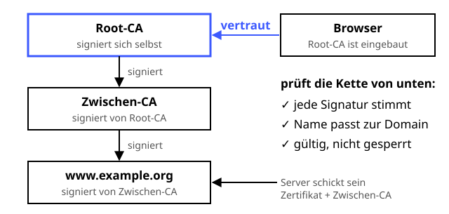

Zertifikate & PKI
Schutzziele: Authentizität
Das Gütesiegel, das bestätigt: Dieser Schlüssel gehört wirklich zu dieser Küche.
Definition
Ein Zertifikat (Standard X.509) bindet einen öffentlichen Schlüssel an eine Identität, zum Beispiel an einen Domainnamen. Eine Zertifizierungsstelle (CA) bestätigt diese Bindung mit ihrer digitalen Signatur. Browser und Betriebssysteme bringen eine Liste von Wurzel-CAs mit, denen sie vertrauen – so entsteht eine Vertrauenskette, die Public-Key-Infrastruktur (PKI).
Zutaten
- Schlüsselpaar des Antragstellers
- Zertifikatsantrag (CSR)
- Eine Zertifizierungsstelle (CA)
- Digitale Signatur
- Vertrauensanker: Root-Zertifikate im Browser bzw. Betriebssystem
Zubereitung
- Der Antragsteller erzeugt ein Schlüsselpaar und einen CSR mit seinem öffentlichen Schlüssel und seiner Domain.
- Die CA prüft, ob ihm die Domain gehört – bei Let's Encrypt automatisch per ACME-Challenge.
- Die CA signiert das Zertifikat: Name, öffentlicher Schlüssel, Gültigkeitszeitraum und Aussteller.
- Der Server liefert sein Zertifikat zusammen mit den Zwischenzertifikaten aus.
- Der Browser prüft die Kette bis zu einer Root-CA, die Gültigkeit, den Domainnamen und ob das Zertifikat gesperrt ist.
- Passt alles, gehört der öffentliche Schlüssel wirklich zu dieser Domain.
Skizze

Der Browser vertraut nur der eingebauten Root-CA (blau) und prüft von dort aus jede Signatur der Kette bis zum Server-Zertifikat.
Skizze erstellt von Claude (KI)
Demo
Platzhalter für die Demo
Tipps
- Eine kompromittierte CA gefährdet alle: 2011 stellte die gehackte CA DigiNotar gefälschte Zertifikate für Google aus.
- Alle öffentlich ausgestellten Zertifikate landen in Certificate-Transparency-Logs – unter
crt.shkann man sie durchsuchen. - Zertifikate automatisch erneuern lassen (z. B. mit certbot), damit die Seite nicht plötzlich eine Warnung zeigt.
- Ein Zertifikat sagt nur, wem die Domain gehört – nicht, ob die Seite seriös ist.